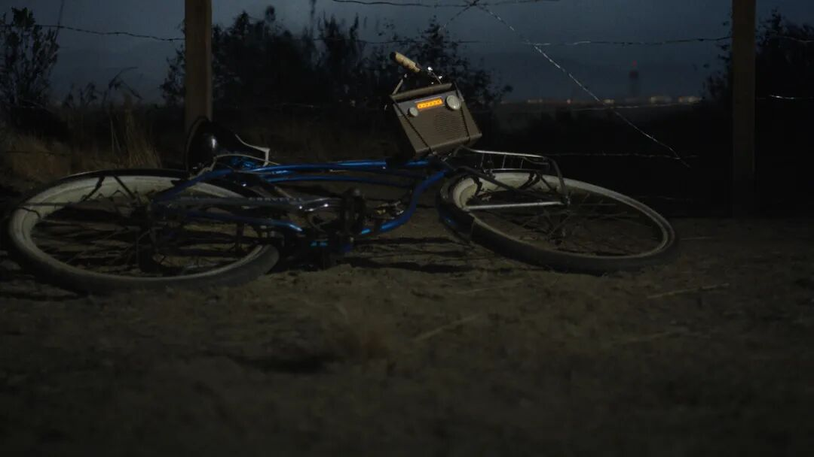

夜色中，一辆自行车孤零零倒在铁丝网旁，远处是小镇的灯火，天空中出现了某种类似虫洞的诡异扰动。

没错，还是那个味道。自行车、黑夜、未知的恐惧，这些《怪奇物语》的经典元素一个不少。
11 月 6 日，Netflix 在这一天正式官宣了《怪奇物语》真人衍生剧《Other Worlds: A Stranger Things Adventure》（异世界：怪奇物语冒险），并放出了首支预告片。
根据官方公布的信息，这部衍生剧的故事发生在1955年，地点是内华达州的马里昂镇（Marion, Nevada），一个和霍金斯小镇毫无关系的地方。比霍金斯那帮小孩发现小镇阴谋的 1980 年代早了几十年，也比横扫奖项的舞台剧《怪奇物语：第一道阴影》（讲述 1959 年 Henry Creel 在霍金斯的过去）更早。
换句话说，所有你在正片里以为"这就是源头"的东西，可能都得再往前推。达菲兄弟说得很直白，也很会吊胃口：
"我们梦想《异世界》已经很多年了，看着它成真，既超现实又让人亢奋。它就是《怪奇物语》，但同时又是全新的——新的设定、新的英雄和反派，新的……其实，我们不被允许再说了。现在，进入选角阶段。
与此同时——看好天空，书呆子们！"
"看好天空，书呆子们。"这句话里的信息量，老粉自己品。
另外啊还有个好消息是，这部剧的幕后班底相当硬核。
Kate Trefry 担任编剧和剧集主管。这个名字你可能不熟，但她从《怪奇物语》第二季就开始参与编剧，后来还写了那部拿下托尼奖的舞台剧《第一道阴影》。
达菲兄弟虽然因为和派拉蒙签了独家合约，没法全职操刀，但仍然挂名联合创作和执行制片。导演方面请来了Joe Wright（《傲慢与偏见》《赎罪》），负责执导前三集。这个组合，气质上其实是有点意外的：一部美式小镇恐怖剧，交给最擅长长镜头与古典叙事张力的英国导演，想想那台摄影机会怎么穿过 1950 年代的走廊。
演员阵容目前还没公布。达菲兄弟在声明里卖了个关子："现在进入选角阶段。在此期间——仰望天空吧，书呆子们！"。
Netflix 选在11月6日官宣，是有讲究的。这一天是"Stranger Things Day"，也是第一季中 Will Byers 失踪的日子，仪式感拉满了。至于这部剧能不能重现当年的辉煌，咱们 2028 年见分晓。